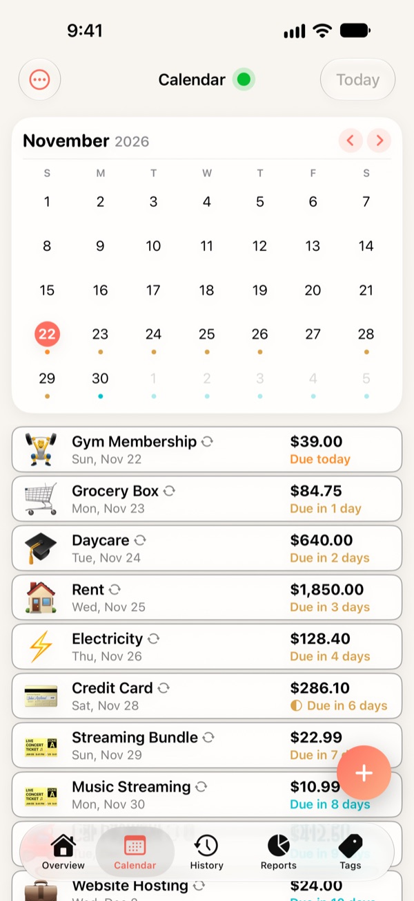
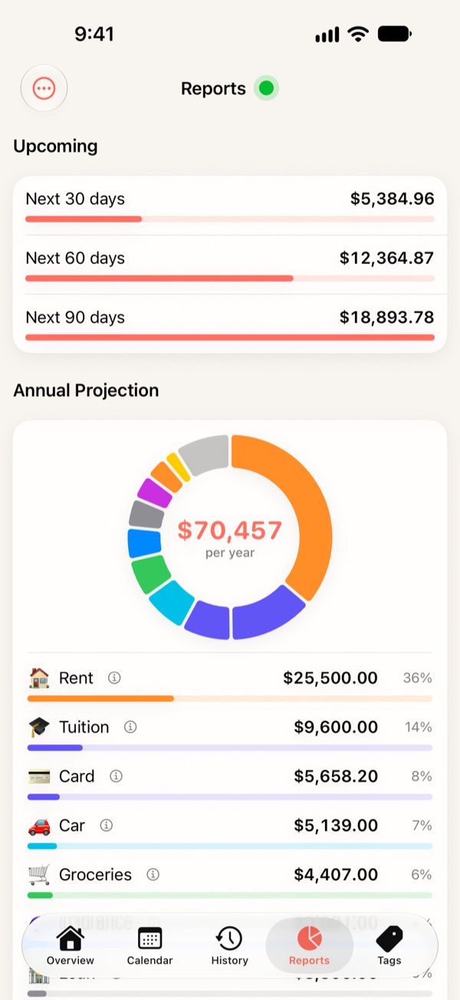
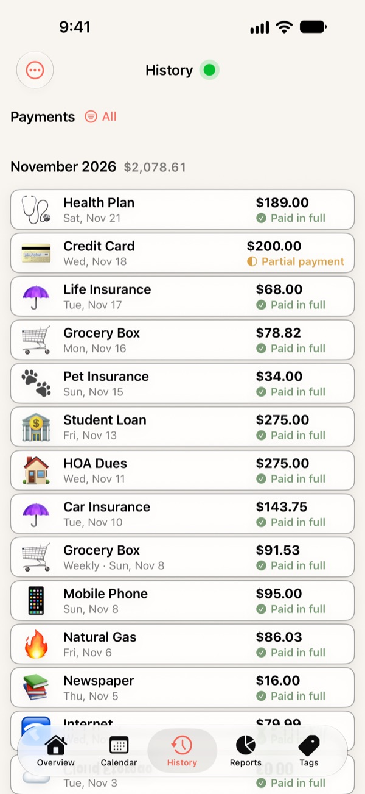
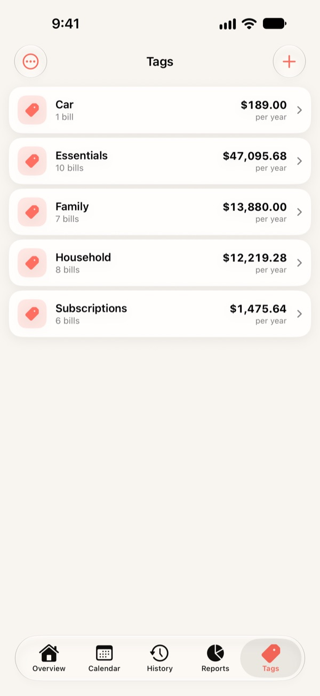
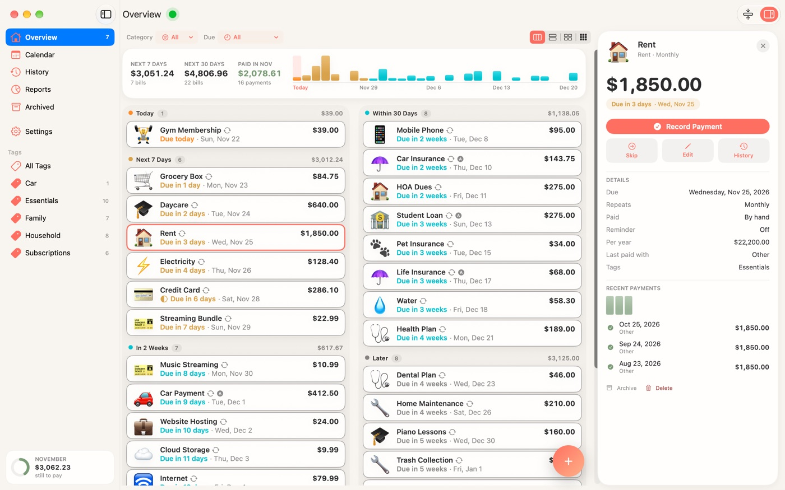
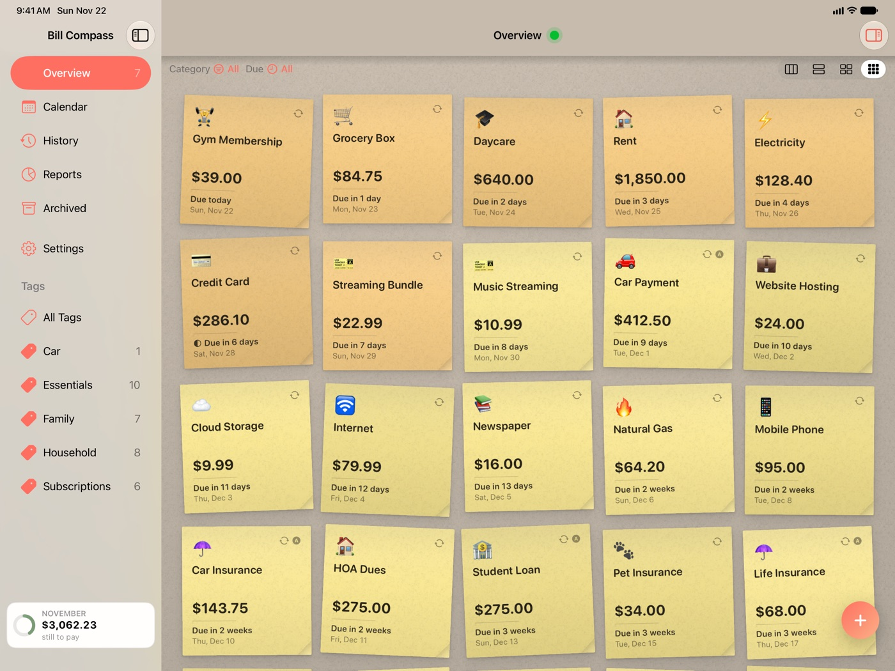

01Start
Three habits, and you are done
- Add each bill onceName, amount, due date and how often it repeats. Bill Compass works out every date after that.
- Let it remind youA notification before each bill falls due, as early as you like — the day of, or up to two weeks ahead.
- Touch and hold to payRecord the payment and the bill rolls on to its next date. Automatic payments record themselves.
02Features
What it does
- OverviewEverything still owed, grouped by when it falls due, under a chart of the next 30 days. As a timeline, a list, a grid, or a wall of paper notes.→
- CalendarThe month laid out by date, so a heavy week is visible before it arrives.→
- ReportsWhat the next 30, 60 and 90 days cost, what each category takes over a year, and what you have paid so far.→
- HistoryEvery payment you have recorded, grouped by month, including part payments and skipped cycles.→
- TagsGroup bills your own way — Essentials, Household, Family — and see what each group costs.→
- RemindersA notification before a bill is due, with the lead time set per bill, and Record Payment and Skip right on it.→
03Screens
A month you can see coming




04Reports you can trust
Nothing slips past
Reports are only as good as the payments recorded in them, so Bill Compass asks about the ones that were missed.
- Paid? Not recorded yetA bill a few days past due with no payment recorded says so, rather than calling itself overdue.
- Record Past BillsA banner on the Overview and in Reports opens one list of them: record a payment for each, or skip a cycle you didn't pay.
- Asked the day afterIf a bill still isn't recorded the day after it's due, a reminder asks whether you paid it.
- Wrap Up each monthOn the 1st, one reminder lists anything last month left unrecorded.
05iPad and Mac
Room to spread out on iPad and Mac
A sidebar with your tags in it, the details of a bill beside the list, and a choice of layouts — a timeline, a list, a grid, or a board of paper notes.


06Sync and privacy
It syncs, and it stays yours
Bill Compass has no account, no server of ours, and no analytics. Your bills live on your device and sync through your own iCloud, which we cannot read. Nothing is collected, and nothing is sold.
Lifetime iCloud Sync — $7.99. Bill Compass works fully on a single device. Keeping the same bills on your iPhone, iPad and Mac is the one thing that costs, and it is bought once — not a subscription. It unlocks on every device signed in to the same Apple Account.
Add a bill on your phone and it is on your Mac. Appearance stays per device on purpose — a Mac on a desk and a phone in bed are entitled to different answers.